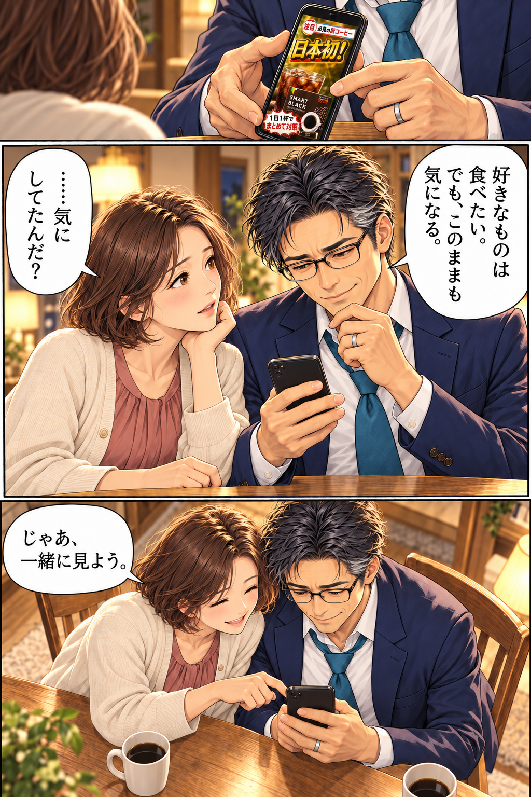
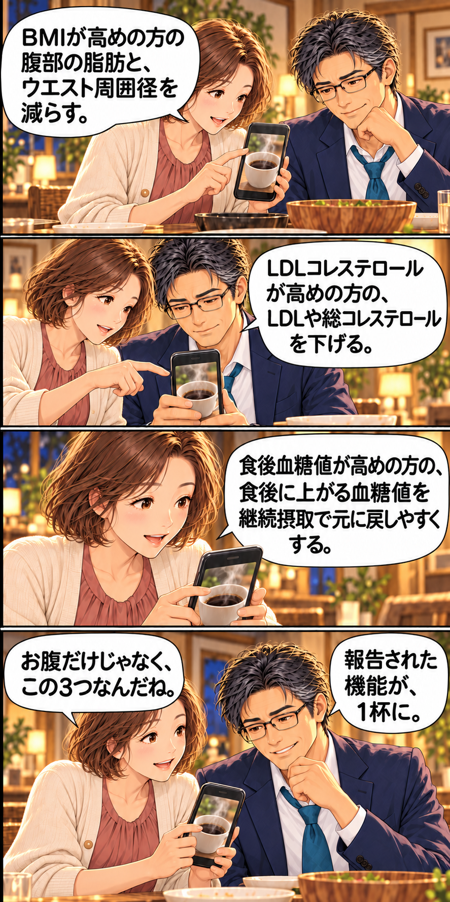
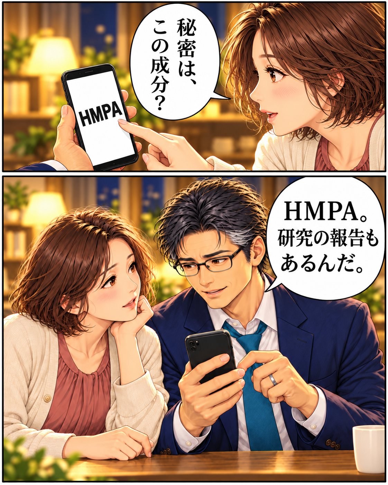
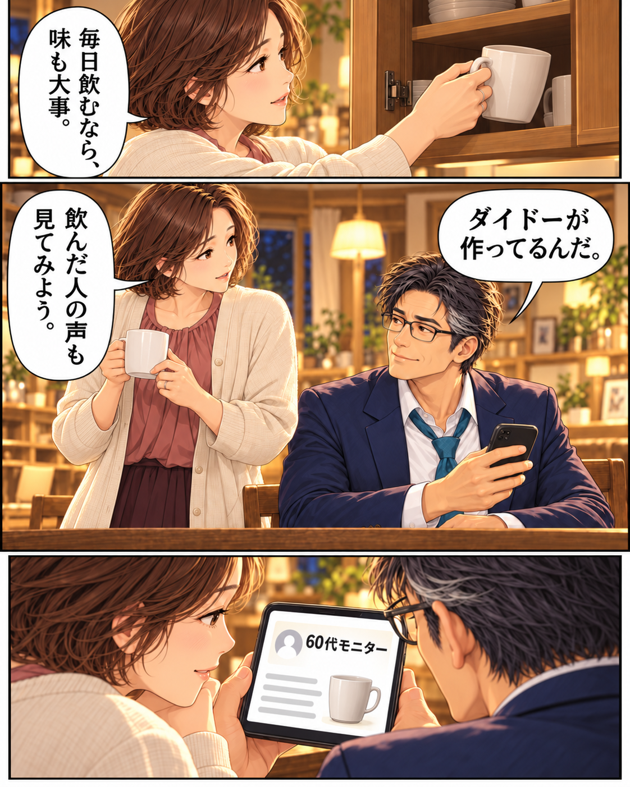
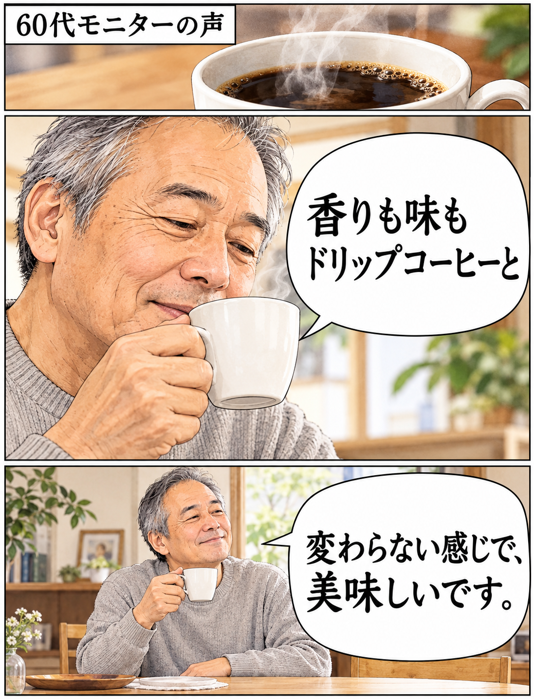

HMPAを「最初から直接摂る」ことで、
効率的に機能を発揮できるようにしました。
夫のヒミツ、追跡中。
帰宅後、ふたりで。
PR:ダイドードリンコ株式会社「好きなもの、つい食べすぎちゃうんだ」
「……そうだったんだ。続きを見せて？」

01これ全部、
これ全部、
1杯で対策※。

二人が見ていたのは、この一杯。

機能性表示食品／届出番号 K7

※3-(4-ヒドロキシ-3-メトキシフェニル)プロピオン酸（HMPA）の研究報告。適切な食事制限と運動の併用が必要です。
02その秘密が、
その秘密が、
HMPA。



科学的根拠が
報告されています。

03美味しいから、
美味しいから、
続けたい。

公式記事に掲載されたモニターの声
香りも、味も。
60代モニターの声を漫画化。
漫画の人物・場面はイメージです。

出典：スマートブラック公式記事（60代モニター）
公式掲載の声から、味に関する一文を抜粋。個人の感想です。
※モニターの嬉しいお声を一部抜粋、編集しております。
※モニターの年齢、継続歴は取材当時のものです。
※画像はイメージです。【PR】
スッキリとした飲みやすさを追求して
あのダイドードリンコが開発した商品です。


いつもの習慣に、
スッと組み込める！

1日摂取目安量：1本。機能性関与成分HMPA：23mg。
食生活は、主食、主菜、副菜を基本に、食事のバランスを。
初めての方だけの特別価格
お得に試せる
チャンス！

もちろん送料無料
定期コースによくある
回数のお約束もありません！
いつでも休止・解約OK！
初めての方限定・お一人様1箱限り。公式アンケート回答者向けの割引です。
2回目以降：1箱5,832円（税込）・送料無料。指定サイクルで継続してお届け。最低購入回数なし。
休止・中止：次回お届け予定日の7日前までに
0120-606-909（平日9:00〜18:00）

届出表示・摂取上の注意を読む ＋
本品には3-(4-ヒドロキシ-3-メトキシフェニル)プロピオン酸（HMPA）が含まれます。HMPAにはBMIが高めの方の腹部の脂肪（内臓脂肪、腹部総脂肪）とウエスト周囲径を減らすこと、継続摂取により、食後血糖値が高めの方の食後に上昇する血糖値を元に戻しやすくすること、LDLコレステロールが高めの方のLDLコレステロールや総コレステロールを下げる機能があることが報告されています。
1日摂取目安量：1本。機能性関与成分HMPA：23mg。
本品は医薬品ではありません。疾病に罹患している場合は医師に、医薬品を服用している場合は医師、薬剤師に摂取について相談してください。原材料名をご確認の上、食物アレルギーのある方はご利用にならないでください。
原材料：コーヒー抽出物（コーヒー豆、デキストリン）（国内製造）、米ぬか発酵物（デキストリン、米ぬか発酵物）。
本品は、特定保健用食品と異なり、機能性及び安全性について国による評価を受けたものではありません。本品は、疾病の診断、治療、予防を目的としたものではありません。